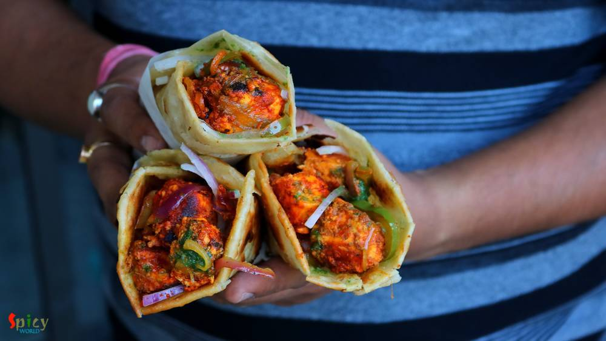

Simple and Easy Recipes
Posts on 'snacks'
")
Nonveg Recipe
Dec 14, 2018
I am a very fast food loving person. During college life there was hardly any day I skipped fast food. Be it simple 'phuchka' (panipuri) or heaviest roll, I was always in ! Surprisingly after my marriage I have taken a lot of control over my food habit, I have become more conscious now. But that doesn't mean I can't eat fast food once in a week .. hell I can ! ?? When I made these yummy 'egg chi ...


Veg Recipe
Nov 4, 2018
Paneer Pakoras are delicious crispy vegetarian appetizer which can be served with mint or tamarind chutney and a cup of strong tea. I cut the paneer cubes from the center and filled it with green chutney as paneer has a bland taste. The recipe is very simple and easy. Your kids will love these Paneer Pakoras. Enjoy the recipe with detailed video.

Veg Recipe
Oct 16, 2018
In Bengal, Durgapujo is incomplete without Ghugni. During pandal hopping one of the best selling street food after phuchka is Ghugni. Not only as a street food, on the auspicious day of Bijoya Doshomi (last day of durga pujo) Ghugni along with Nimki and Naru is served in every household of West Bengal. Ghugni is a yellow peas curry with few chunks of potato although many people add chopped fried c ...

Veg Recipe
Sep 25, 2018
Paneer Kathi Roll is loved by both vegetarian and non vegetarian people all across India. Paneer Frankie or roll is nothing but stuffed wrap, cooked paneer cubes with some onion slices and green chutney will be stuffed inside a cooked flour paratha. It will be easy for you if you divide the recipe in 3 parts - making stuffing, making paratha, assembling the rolls. You can serve this as evening sna ...

Nonveg Recipe
May 23, 2016
Last week I was thinking that my blog doesn't have the recipe of 'mangsher ghugni' and being a Bengali I felt very awkward. There is no Bengali in the world who doesn't know about this dish ... yes, 'mutton ghugni' is that much famous. On special occasions or guest's arrival in evening, 'mangsher ghugni' is a very common item we Bengalis make. It's a Indian version of 'chili'. We make the curry of ...

Veg Recipe
Aug 27, 2018
A cup of tea and some vegetable cutlets .... do you need anything more to spend a winter or rainy evening ?? I am always up for this kind of evenings. These cutlets are very much available in Kolkata. I guess, almost nobody makes vegetable cutlets at home in Bengal. On any occasion or just to enjoy some snacks, these chops were always bought from 'telebhajar dokan' / fast food center in my home. B ...

Nonveg Recipe
May 24, 2018
I am one true lover of rolls, be it an Egg roll or Chicken roll. I know many of you do also. But fact is it's always better to have home cooked food than consuming street food, here everyone has one common complain about that - taste is not the same yaar ! right ? Being a crazy fast food lover I can guarantee you that this is one top notch recipe of Butter Chicken Roll. I've combined two best idea ...

Nonveg Recipe
May 20, 2016
Every place in this world has their own tea stalls and also some unique dishes. You can never match the taste of tea stall's food with big restaurant's food ... a huge difference ! One of the famous item of those stalls in India is 'toast'. You can get so many types of toast from them like 'butter toast', 'french toast', 'plain toast' etc. I love to eat 'dim pauruti' or in fancy words 'savory fren ...
 / Cauliflower Fritters")
Veg Recipe
Feb 8, 2016
We Indians are crazy about 'pakore' .. don't you think so ?? We make fritters out of almost everything - 'potato', 'eggplant', 'okra', 'cabbage', 'chili', 'lentils', 'chicken', 'fish' and so many more ?. 'He' adores only two vegetables in his life, one is potato and the other one is cauliflower. You can impress him with any type of cauliflower dish. So, is there any doubt about what I'm talking a ...
Contact Us
Guest Post
Subscribe RSS Feed
User Agreement
Public Presence
Feedback
Free Games
Home
Recipes
Categories
Images
Food Plating
About Me
Guest Post
Subscribe RSS Feed
User Agreement
Public Presence
Feedback
Free Games
Home
Recipes
Categories
Images
Food Plating
About Me
What we offer?
- Recipe Development
- Restaurant & Food Review
- Food Photography
- Website, Blog & Application Development
- UX / UI Designing
- Sponsorship & Advertisement
Contact us via Email
contact@spicyworld.in
Who we Are?


Amitava Ghosh
Website & CMS Designer, Developer and Architect.
Website & CMS Designer, Developer and Architect.